<!DOCTYPE html>


<html lang="zh-CN">


<head>
  <meta name="baidu-site-verification" content="codeva-NSg7ynviLa" />
  <meta charset="utf-8" />
    
  <meta name="viewport" content="width=device-width, initial-scale=1, maximum-scale=1" />
  <title>
    稀疏矩阵算法最小度数算法二之商图 |  
  </title>
  <meta name="generator" content="hexo-theme-ayer">
  
  <link rel="shortcut icon" href="/images/mojie.jpg" />
  
  
<link rel="stylesheet" href="/dist/main.css">

  <link rel="stylesheet" href="https://cdn.jsdelivr.net/gh/Shen-Yu/cdn/css/remixicon.min.css">
  
<link rel="stylesheet" href="/css/custom.css">

  
  <script src="https://cdn.jsdelivr.net/npm/pace-js@1.0.2/pace.min.js"></script>
  
  

  

<link rel="alternate" href="/atom.xml" title="null" type="application/atom+xml">
</head>

</html>

<body>
  <div id="app">
    
      
    <main class="content on">
      <section class="outer">
  <article
  id="post-稀疏矩阵算法最小度数算法二之商图"
  class="article article-type-post"
  itemscope
  itemprop="blogPost"
  data-scroll-reveal
>
  <div class="article-inner">
    
    <header class="article-header">
       
<h1 class="article-title sea-center" style="border-left:0" itemprop="name">
  稀疏矩阵算法最小度数算法二之商图
</h1>
 

    </header>
     
    <div class="article-meta">
      <a href="/posts/aef04e13/" class="article-date">
  <time datetime="2022-09-25T08:43:39.000Z" itemprop="datePublished">2022-09-25</time>
</a> 
  <div class="article-category">
    <a class="article-category-link" href="/categories/%E7%90%86%E8%AE%BA%E5%AD%A6%E4%B9%A0/">理论学习</a> / <a class="article-category-link" href="/categories/%E7%90%86%E8%AE%BA%E5%AD%A6%E4%B9%A0/%E7%A8%80%E7%96%8F%E7%9F%A9%E9%98%B5/">稀疏矩阵</a>
  </div>
  
<div class="word_count">
    <span class="post-time">
        <span class="post-meta-item-icon">
            <i class="ri-quill-pen-line"></i>
            <span class="post-meta-item-text"> 字数统计:</span>
            <span class="post-count">3k</span>
        </span>
    </span>

    <span class="post-time">
        &nbsp; | &nbsp;
        <span class="post-meta-item-icon">
            <i class="ri-book-open-line"></i>
            <span class="post-meta-item-text"> 阅读时长≈</span>
            <span class="post-count">13 分钟</span>
        </span>
    </span>
</div>
 
    </div>
      
    <div class="tocbot"></div>


  
    <div class="article-entry" itemprop="articleBody">
       
  <p>本章节介绍 <em>the minimum degree algorithm</em> ，我个人将其翻译为最小度数算法。这里我们看如何用商图表示和转换消元图。</p>
<span id="more"></span>
<h1 id="computer-representation-of-elimination-graphs">Computer Representation of Elimination Graphs</h1>
<p>在这一章节汇总，我们研究如何在计算中表示和转换 <em>elimination graphs</em> 。</p>
<h2 id="explicit-and-implicit-representations">Explicit and Implicit Representations</h2>
<p>让我们回顾一下消元的转换过程，<span class="math inline">\(\mathcal{G}_{i}\)</span> 是从 <span class="math inline">\(\mathcal{G}_{i-1}\)</span> 消除节点 <span class="math inline">\(x_{i}\)</span> 得到的图，<span class="math inline">\(\mathcal{G}_{i}\)</span> 的相邻结构可以按照下面的方式获得：</p>
<ol type="1">
<li><p>获得 <span class="math inline">\(\mathcal{G}_{i-1}\)</span> 中的相邻集合 <span class="math inline">\(Adj_{\mathcal{G}_{i-1}}(x_{i})\)</span></p></li>
<li><p>从相邻结构中移除节点 <span class="math inline">\(x_{i}\)</span> 及其相邻列表</p></li>
<li><p>对于任何一个节点 <span class="math inline">\(y \in Adj_{\mathcal{G}_{i-1}}(x_{i})\)</span> ，<span class="math inline">\(y\)</span> 在 <span class="math inline">\(\mathcal{G}_{i}\)</span> 中新的相邻列表通过合并两个子集得到
<span class="math display">\[
Adj_{\mathcal{G}_{i-1}}(y) - \{x_{i}\} \text{ and } Adj_{\mathcal{G}_{i-1}}(x_{i}) - \{ y \}
\]</span></p></li>
</ol>
<p>这里有两点需要注意，首先在相邻结构中用于存储 <span class="math inline">\(Adj_{\mathcal{G}_{i-1}}(x_{i})\)</span> 的空间可以在第二步之后重复使用；第二，<span class="math inline">\(\mathcal{G}_{i}\)</span> 可能会比 <span class="math inline">\(\mathcal{G}_{i-1}\)</span> 占用更多的空间。</p>
<p>我们需要一种更加灵活的数据结构，用于存储在 <em>elimination graphs</em> 中结构的动态变化，比如之前提到的 <em>adjacency linked list</em> 。</p>
<h2 id="quotient-graph-model">Quotient Graph Model</h2>
<p>让我们首先对下面的图进行消元，我们消除节点 <span class="math inline">\(x_{1}\)</span> 到 <span class="math inline">\(x_{5}\)</span> 之后得到右边的消元图。</p>
<p>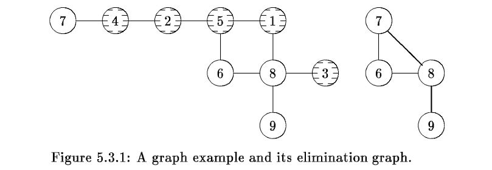</p>
<p>设 <span class="math inline">\(S = \{ x_{1}, x_{2}, x_{3},x_{4}, x_{5}\}\)</span> ，在 <em>implicit model</em> 中，为了发现 <span class="math inline">\(x_{6} \in Reach(x_{7}, S)\)</span> ，我们必须先找到路径 <span class="math inline">\((x_{7}, x_{4}, x_{2},x_{5}, x_{6})\)</span> 。相似地， <span class="math inline">\(x_{8} \in Reach(x_{7}, S)\)</span> 也是因为存在路径 <span class="math inline">\((x_{7}, x_{4}, x_{2},x_{5}, x_{1}, x_{8})\)</span> 。注意这两个路径的长度分别为 4 和 5 。</p>
<p>我们有两个观测结果：</p>
<ol type="1">
<li>如果未消元的节点间的 reachable path 的长度可以缩减，那么生成 reachable sets 的工作量会降低</li>
<li>如果上面的这些路径可以缩减到极端的情况，那么我们就可以得到 <em>explicit elimination graphs</em> 。</li>
</ol>
<p>我们寻求一个妥协，通过聚集连接的消除的节点，我们获得了一个新的图结构。举个例子，在上面的图中，在图 <span class="math inline">\(\mathcal{G}(S)\)</span> 中存在两个连通组分，分别为 <span class="math inline">\(\{ x_{1}, x_{2}, x_{4}, x_{5} \}\)</span> 和 <span class="math inline">\(\{x_{3}\}\)</span> 。通过形成两个 “supernodes”，我们获得下面的图</p>
<p>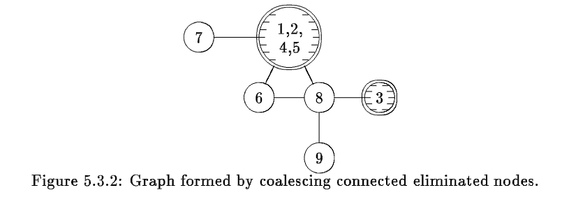</p>
<p>为了方便，我们设 <span class="math inline">\(\bar{x}_{5} = \{ x_{1}, x_{2}, x_{4}, x_{5} \}\)</span> 和 <span class="math inline">\(\bar{x}_{3} =\{x_{3}\}\)</span> 来表示 <span class="math inline">\(S\)</span> 中的这两个连通组分。在这个新图中，我们注意到存在路径
<span class="math display">\[
(x_{7}, \bar{x}_{5}, x_{6})
\]</span>
和
<span class="math display">\[
(x_{7}, \bar{x}_{5}, x_{8})
\]</span>
这两条路径的长度为 2，一般来说，如果采用这种策略，那么所有这样的路径的长度均会小于等于 2 。</p>
<p>这种策略的另一个优势可以 <em>implemented in-place</em> ，也就是说，这种方式不会占用比原始的图结构更多的空间。</p>
<p>为了正式描述这种消元方式，我们引入<strong>商图</strong> (<em>quotient graphs</em>) 。设 <span class="math inline">\(\mathcal{G} = (X,E)\)</span> 是一个给定的图，设 <span class="math inline">\(\mathcal{P}\)</span> 是一种基于节点集合 <span class="math inline">\(X\)</span> 的分隔形式
<span class="math display">\[
\mathcal{P} = \{Y_{1},Y_{2},\cdots,Y_{p}\}
\]</span>
即 <span class="math inline">\(\cup_{k=1}^{p} Y_{k} = X\)</span> , <span class="math inline">\(Y_{i} \cap Y_{j} = \phi, i \neq j\)</span></p>
<p>我们定义 <span class="math inline">\(\mathcal{G}\)</span> 基于 <span class="math inline">\(\mathcal{P}\)</span> 的商图为图 <span class="math inline">\((\mathcal{P}, \mathcal{\xi})\)</span>，其中当且仅当 <span class="math inline">\(Adj(Y_{i}) \cap Y_{j} \neq \phi\)</span> 时 <span class="math inline">\(\{ Y_{i}, Y_{j}\} \in \xi\)</span> 。通常我们将这个图标记为 <span class="math inline">\(\mathcal{G/P}\)</span> 。</p>
<p>上面图 5.3.2 就是一个商图，其切分方式为
<span class="math display">\[
\{ x_{1}, x_{2}, x_{4}, x_{5} \},\{x_{3}\},\{x_{6}\},\{x_{7}\},\{x_{8}\},\{x_{9}\}
\]</span>
设 <span class="math inline">\(\mathcal{G} = (X,E)\)</span> 是一个给定的图，我们考虑消元的一个阶段，其中 <span class="math inline">\(S\)</span> 是已经消除的节点集合。我们现在将其联系为一个基于 <span class="math inline">\(S\)</span> 的商图，定义集合
<span class="math display">\[
\mathcal{C}(S) = \{ C \subset S \mid \mathcal{G}(C) \text{ is a connected component in the subgraph } \mathcal{G}(S) \}
\]</span>
对 <span class="math inline">\(X\)</span> 的切分为
<span class="math display">\[
\mathcal{\bar{C}}(S) = \{ \{y\} \mid y \in X-S  \} \cup \mathcal{C}(S)
\]</span>
则可以唯一地定义商图
<span class="math display">\[
\mathcal{G} / \mathcal{\bar{C}}(S)
\]</span>
则可以视为对 <span class="math inline">\(S\)</span> 中的聚集的连通集合得到的图，图 5.3.2 就是对 <span class="math inline">\(S = \{ x_{1}, x_{2}, x_{3},x_{4}, x_{5}\}\)</span> 生成的商图。我们现在研究消元过程中的商图间的相关性。设 <span class="math inline">\(x_{1}, x_{2}, \cdots, x_{n}\)</span> 为给定图 <span class="math inline">\(\mathcal{G}\)</span> 消元的一系列节点，就像之前一样，设
<span class="math display">\[
S_{i} = \{ x_{1}, x_{2}, \cdots, x_{i}\}, \quad 1 \leq i \leq n
\]</span>
对于每一个 <span class="math inline">\(i\)</span> ，子集 <span class="math inline">\(S_{i}\)</span> 可以推导出分隔方式 <span class="math inline">\(\mathcal{\bar{C}}(S_{i})\)</span> ，而相应的商图为
<span class="math display">\[
\boldsymbol{\mathcal{G}}_{i} = \mathcal{G}/\mathcal{\bar{C}}(S_{i}) = (\mathcal{\bar{C}}(S_{i}), \mathcal{\xi}_{i})
\]</span>
用这种方式，我们可以得到一系列商图
<span class="math display">\[
\boldsymbol{\mathcal{G}}_{1} \rightarrow \boldsymbol{\mathcal{G}}_{2} \rightarrow \cdots \rightarrow \boldsymbol{\mathcal{G}}_{n}
\]</span>
下图就是上面例子中的这一系列商图。</p>
<p>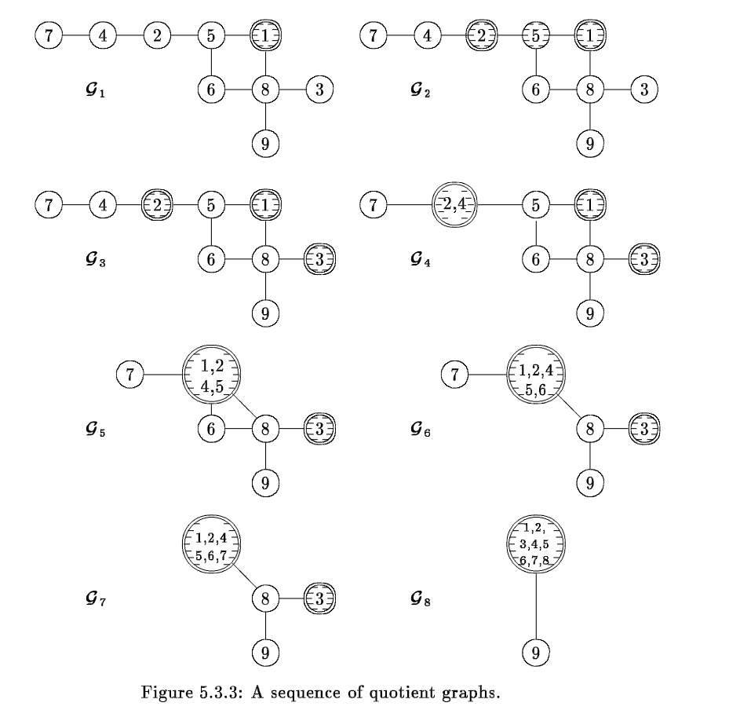</p>
<p>下图的定理说明了上面商图其实就是 <em>elimination graphs</em> 的另一种表示。</p>
<p><strong>定理 5.3.1</strong>：对于任意 <span class="math inline">\(y \in X - S_{i}\)</span> ，我们有
<span class="math display">\[
Reach_{\mathcal{G}}(y, S_{i}) = Reach_{\boldsymbol{\mathcal{G}}_{i}}(y, \mathcal{C}(S_{i}))
\]</span>
证明略</p>
<p>确定在商图 <span class="math inline">\(\mathcal{G}_{i}\)</span> 的 <em>reachable set</em> 很直接，对于一个给定的节点 <span class="math inline">\(y \notin \mathcal{C}(S_{i})\)</span> ，下面的算法会返回集合 <span class="math inline">\(Reach_{\mathcal{G}_{i}}(y, \mathcal{C}(S_{i}))\)</span> ，注意这里应用了商图的 <em>reachable path</em> 长度最多为 2 的特性 。</p>
<p>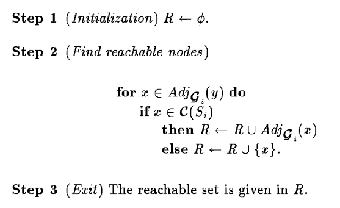</p>
<p>实际上我们可以从商图中获得 <em>elimination graph</em> ，算法如下：</p>
<p>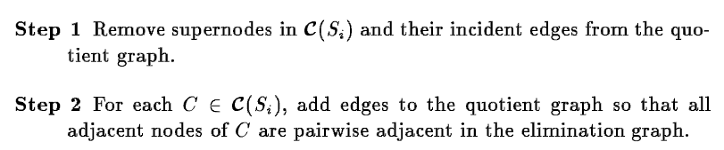</p>
<p>为了说明这个事先，我们考虑上例中从 <span class="math inline">\(\boldsymbol{\mathcal{G}}_{4}\)</span> 生成 <span class="math inline">\(\mathcal{G}_{4}\)</span> 的过程（加粗表示商图，不加粗表示 <em>elimination graph</em> ），见下图</p>
<p>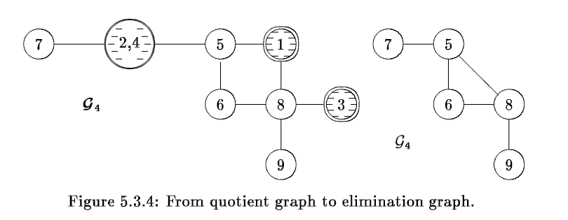</p>
<p>商图模型处于两种模型的中间</p>
<p>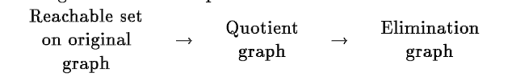</p>
<p>这三种模型的对应关系总结如下表</p>
<p>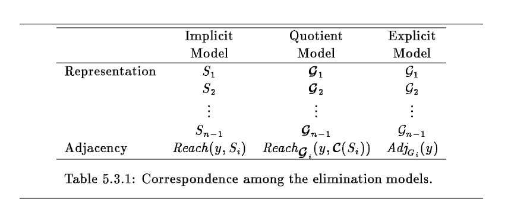</p>
<h2 id="implementation-of-the-quotient-graph-model">Implementation of the Quotient Graph Model</h2>
<p>我们考虑由消除的节点集合 <span class="math inline">\(S\)</span> 形成的商图 <span class="math inline">\(\boldsymbol{\mathcal{G}}_{i} = \mathcal{G}/\mathcal{\bar{C}}(S_{i})\)</span> ，如果 <span class="math inline">\(s \in S\)</span> ，我们采用符号 <span class="math inline">\(\bar{s}\)</span> 来表明在子图 <span class="math inline">\(\mathcal{G}(S)\)</span> 中的包含 <span class="math inline">\(s\)</span> 的连通组分。比如，在上面的例子中
<span class="math display">\[
\bar{x}_{5} = \bar{x}_{1} = \bar{x}_{2} = \bar{x}_{4} = \{ x_1,x_2,x_4,x_5\}
\]</span>
换句话说，对于一个给定的连通组分 <span class="math inline">\(C \subset \mathcal{C}(S)\)</span> ，我们可以选择 <span class="math inline">\(C\)</span> 中的任意一个节点 <span class="math inline">\(x\)</span> ，然后使用 <span class="math inline">\(x\)</span> 来表示 <span class="math inline">\(C\)</span> ，即 <span class="math inline">\(\bar{x} = C\)</span> 。在我们讨论如何选择 <span class="math inline">\(x\)</span> 之前，我们先证明商图模型可以 <em>implemented in-place</em> ，也就是说，只利用原始图的相邻结构的空间。</p>
<p><strong>引理 5.3.2</strong>：设 <span class="math inline">\(\mathcal{G} = (X,E)\)</span> , <span class="math inline">\(C \subset X\)</span> ，其中 <span class="math inline">\(\mathcal{G}(C)\)</span> 是一个连通的子图，那么我们有
<span class="math display">\[
\sum_{x \in C}|Adj(x)| \geq |Adj(C)| + 2(|C| - 1)
\]</span>
<strong>证明</strong>：因为 <span class="math inline">\(\mathcal{G}(C)\)</span> 是一个连通子图，因此在 <span class="math inline">\(\mathcal{G}(C)\)</span> 中至少有 <span class="math inline">\(|C|-1\)</span> 条边，这些边在 <span class="math inline">\(\sum_{x \in C}|Adj(x)|\)</span> 中会计算两次，得证。</p>
<p>设 <span class="math inline">\(x_{1},x_{2},\cdots, x_{n}\)</span> 是节点序列，<span class="math inline">\(S_{i} = \{ x_{1},\cdots,x_{i}\}\)</span> ，对于 <span class="math inline">\(1 \leq i \leq n\)</span> ，我们有：
<span class="math display">\[
\boldsymbol{\mathcal{G}}_{i} = \mathcal{G}/\mathcal{\bar{C}}(S_{i}) = (\mathcal{\bar{C}}(S_{i}), \mathcal{\xi}_{i})
\]</span>
<strong>引理 5.3.3</strong>：设 <span class="math inline">\(y \in X - S_{i}\)</span> ，那么
<span class="math display">\[
|Adj_{\mathcal{G}}(y)| \geq |Adj_{\boldsymbol{\mathcal{G}}_{i}}(y)|
\]</span>
证明：<span class="math inline">\(y\)</span> 的相邻节点可以分为两类，属于 <span class="math inline">\(S_{i}\)</span> 和 不属于 <span class="math inline">\(S_{i}\)</span> 的节点。对于不属于 <span class="math inline">\(S_{i}\)</span> 的节点，原图和商图均不受影响；对于属于 <span class="math inline">\(S_{i}\)</span> 的节点，商图可能会合并成一个 “supernode”，因此数目会减少。因此得证 <span class="math inline">\(|Adj_{\mathcal{G}}(y)| \geq |Adj_{\boldsymbol{\mathcal{G}}_{i}}(y)|\)</span> 。</p>
<p>同时容易证明 <span class="math inline">\(|Adj_{\boldsymbol{\mathcal{G}}_{i}}(y)| \geq |Adj_{\boldsymbol{\mathcal{G}}_{i+1}}(y)|\)</span> ，如果 <span class="math inline">\(x_{i+1} \notin Adj_{\boldsymbol{\mathcal{G}}_{i}}(y)\)</span> ，那么 无论<span class="math inline">\(x_{i+1}\)</span> 是否与其它节点进行合并，都不会影响 <span class="math inline">\(y\)</span> 的相邻节点数目，因此 <span class="math inline">\(|Adj_{\boldsymbol{\mathcal{G}}_{i}}(y)| = |Adj_{\boldsymbol{\mathcal{G}}_{i+1}}(y)|\)</span>。如果 <span class="math inline">\(x_{i+1} \in Adj_{\boldsymbol{\mathcal{G}}_{i}}(y)\)</span> ，此时如果 <span class="math inline">\(x_{i+1}\)</span> 是孤立的，那么 <span class="math inline">\(y\)</span> 的相邻节点不变，如果 <span class="math inline">\(x_{i+1}\)</span> 与其它节点进行合并，那么此时 <span class="math inline">\(y\)</span> 的相邻节点数目要么不变，要么会减1。因此得证成立。</p>
<p><strong>定理 5.3.4</strong>：
<span class="math display">\[
\max_{i \leq i \leq n} |\mathcal{\xi}_{i}| \leq |E|
\]</span>
证明：考虑商图 <span class="math inline">\(\boldsymbol{\mathcal{G}}_{i}\)</span> 和 <span class="math inline">\(\boldsymbol{\mathcal{G}}_{i+1}\)</span> ，如果 <span class="math inline">\(x_{i+1}\)</span> 在子图 <span class="math inline">\(\mathcal{G}(S_{i+1})\)</span> 中是孤立的，那么显然 <span class="math inline">\(|\mathcal{\xi}_{i+1}| = |\mathcal{\xi}_{i}|\)</span> ；否则 <span class="math inline">\(x_{i+1}\)</span> 会合并到 <span class="math inline">\(S_{i}\)</span> 的某个连通组分中，形成 <span class="math inline">\(S_{i+1}\)</span> ，那么消元节点内的边数目不变，而根据 <span class="math inline">\(|Adj_{\boldsymbol{\mathcal{G}}_{i}}(y)| \geq |Adj_{\boldsymbol{\mathcal{G}}_{i+1}}(y)|\)</span> ，说明不属于 <span class="math inline">\(S_{i+1}\)</span> 的节点的边的数目最多和之前相等，再加上减少的 <span class="math inline">\(x_{i+1}\)</span> 的边，因此得到 <span class="math inline">\(|\mathcal{\xi}_{i+1}| &lt; |\mathcal{\xi}_{i}|\)</span> ，因此在所有的情况中均存在 <span class="math inline">\(|\mathcal{\xi}_{i+1}| \leq |\mathcal{\xi}_{i}|\)</span> ，因此得证 <span class="math inline">\(\max_{i \leq i \leq n} |\mathcal{\xi}_{i}| \leq |E|\)</span> 。</p>
<p>这个定理说明通过消元生成的商图占用的空间不会超过原始的图，而且通过引理 5.3.2，对于 <span class="math inline">\(|C| &gt;1\)</span> ，会富裕出 <span class="math inline">\(2(|C| - 1)\)</span> 个位置。</p>
<p>设 <span class="math inline">\(x_{1},x_{2},\cdots, x_{n}\)</span> 是节点序列，<span class="math inline">\(C \in C(S)\)</span> 。我们选择 <span class="math inline">\(x_{r} \in C\)</span> 作为 <span class="math inline">\(C\)</span>的代表，其中
<span class="math display">\[
r = \max\{j \mid x_{j} \in  C\}
\]</span>
也就是说，<span class="math inline">\(x_{r}\)</span> 是 <span class="math inline">\(C\)</span> 中最后消除的节点。</p>
<p>到此为止，我们描述了商图的数据结构以及如何表示 <em>supernodes</em> ，另一个重要的部分就是在消元的过程中商图的转换。下面的算法展现了如何从 <span class="math inline">\(\boldsymbol{\mathcal{G}}_{i-1}\)</span> 中剔除节点 <span class="math inline">\(x_{i}\)</span> 得到 <span class="math inline">\(\boldsymbol{\mathcal{G}}_{i}\)</span> 。</p>
<p>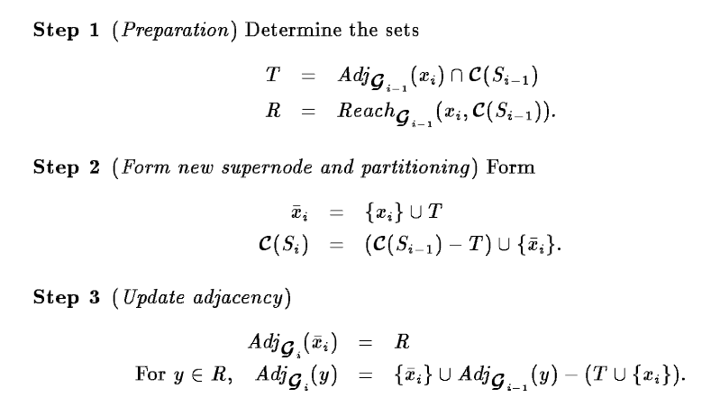</p>
<p>让我们用图 5.3.3 中从 <span class="math inline">\(\boldsymbol{\mathcal{G}}_{4}\)</span> 到 <span class="math inline">\(\boldsymbol{\mathcal{G}}_{5}\)</span> 的过程为例，在 <span class="math inline">\(\boldsymbol{\mathcal{G}}_{4}\)</span> 中 <span class="math inline">\(C(S_{4}) = \{\bar{x}_{1},\bar{x}_{3},\bar{x}_{4}\}\)</span> ，我们对 <span class="math inline">\(x_{5}\)</span> 采用第一步，得到
<span class="math display">\[
T = \{\bar{x}_{1},\bar{x}_{4}\}
\]</span>
和
<span class="math display">\[
R = \{x_{6},x_{7},x_{8}\}
\]</span>
因此，新的 ”supernode“ 为
<span class="math display">\[
\bar{x}_{5} = \{ x_{5} \} \cup \bar{x}_{1} \cup \bar{x}_{4} = \{ x_{1},x_{2},x_{4},x_{5}\}
\]</span>
新的拆分方式为
<span class="math display">\[
C(S_{5}) =  \{ \bar{x}_{3}, \bar{x}_{5} \}
\]</span>
最后，在第三步我们更新相邻集合，得到
<span class="math display">\[
Adj_{\boldsymbol{\mathcal{G}}_{5}}(\bar{x}_{5}) = R = \{x_{6},x_{7},x_{8}\}
\]</span>
和
<span class="math display">\[
\begin{aligned}
Adj_{\boldsymbol{\mathcal{G}}_{5}}(x_{6}) &amp;= \{ \bar{x}_{5}, x_{8}\} \\
Adj_{\boldsymbol{\mathcal{G}}_{5}}(x_{7}) &amp;= \{ \bar{x}_{5}\} \\
Adj_{\boldsymbol{\mathcal{G}}_{5}}(x_{8}) &amp;= \{ \bar{x}_{3} , \bar{x}_{5} , x_{6} , x_{9} \} \\
\end{aligned}
\]</span>
商图转换的效果可以通过一个例子来说明，采用图 5.3.3 中的例子，其中我们其相邻结构如图 5.3.6 所示。图 5.3.7 展示生成商图的一些步骤，在 <span class="math inline">\(\boldsymbol{\mathcal{G}}_{1}\)</span> 到 <span class="math inline">\(\boldsymbol{\mathcal{G}}_{3}\)</span> 的形成过程中，相邻结构没有改变。而从 <span class="math inline">\(\boldsymbol{\mathcal{G}}_{3}\)</span> 到 <span class="math inline">\(\boldsymbol{\mathcal{G}}_{4}\)</span> 的转换过程中，节点 <span class="math inline">\(x_{2}\)</span> 和 <span class="math inline">\(x_{4}\)</span> 聚合到了一起，因此在 <span class="math inline">\(\boldsymbol{\mathcal{G}}_{4}\)</span> 中，节点 <span class="math inline">\(x_{4}\)</span> 的新的相邻结构包含了原图中 <span class="math inline">\(\{x_{2}, x_{4}\}\)</span> 的相邻结构。这里 <span class="math inline">\(x_{4}\)</span> 的相邻列表的最后位置采用了一个链表（貌似是其相邻节点排好序，先放到 <span class="math inline">\(x_{4}\)</span> 的相邻列表中第1个到倒数第二个位置，还有多的再放到其它节点的相邻列表中。<strong>此时最后一个位置的链接采用负数，这里就是 -2</strong> 。将相邻节点最后一个位置之后的一个位置<strong>设为0</strong>，表示终止位置，对应下图中划线的方块 ）。注意在 <span class="math inline">\(x_{5}\)</span> 的相邻列表中，其相邻节点 <span class="math inline">\(x_{2}\)</span> 在 <span class="math inline">\(\boldsymbol{\mathcal{G}}_{4}\)</span> 中改为了 <span class="math inline">\(x_{4}\)</span> ，因此此时 <span class="math inline">\(x_{4}\)</span> 已经变成了子集 <span class="math inline">\(\{x_{2}, x_{4}\}\)</span> 的代表。</p>
<p>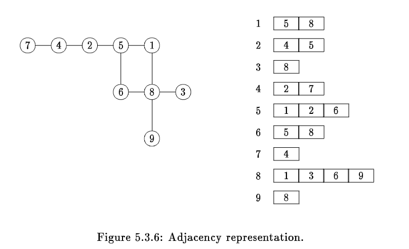</p>
<p>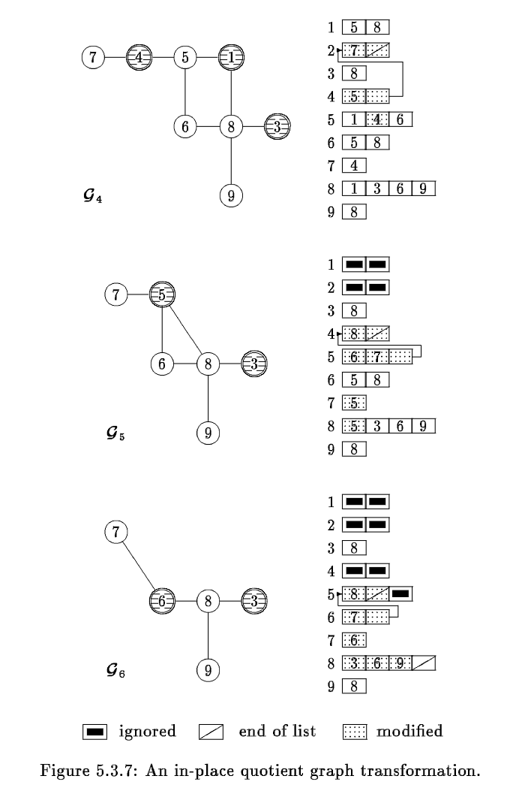</p>
<h1 id="参考文献">参考文献</h1>
<ol type="1">
<li>George A, Liu J, Ng E. Computer solution of sparse linear systems[J]. Oak Ridge National Laboratory, 1994.</li>
</ol>
 
      <!-- reward -->
      
    </div>
    

    <!-- copyright -->
    
    <div class="declare">
      <ul class="post-copyright">
        <li>
          <i class="ri-copyright-line"></i>
          <strong>版权声明： </strong>
          
          本博客所有文章除特别声明外，著作权归作者所有。转载请注明出处！
          
        </li>
      </ul>
    </div>
    
    <footer class="article-footer">
       
  <ul class="article-tag-list" itemprop="keywords"><li class="article-tag-list-item"><a class="article-tag-list-link" href="/tags/%E7%90%86%E8%AE%BA%E5%AD%A6%E4%B9%A0/" rel="tag">理论学习</a></li><li class="article-tag-list-item"><a class="article-tag-list-link" href="/tags/%E7%A8%80%E7%96%8F%E7%9F%A9%E9%98%B5/" rel="tag">稀疏矩阵</a></li></ul>

    </footer>
  </div>

   
  <nav class="article-nav">
    
      <a href="/posts/ff1d909d/" class="article-nav-link">
        <strong class="article-nav-caption">上一篇</strong>
        <div class="article-nav-title">
          
            稀疏矩阵算法最小度数算法三之最小度数算法理论
          
        </div>
      </a>
    
    
      <a href="/posts/9b2dddf7/" class="article-nav-link">
        <strong class="article-nav-caption">下一篇</strong>
        <div class="article-nav-title">稀疏矩阵算法最小度数算法一之消元图</div>
      </a>
    
  </nav>

  
   
     
</article>

</section>
      <footer class="footer">
  <div class="outer">
    <ul>
      <li>
        Copyrights &copy;
        2019-2026
        <i class="ri-heart-fill heart_icon"></i> Vincere Zhou
      </li>
    </ul>
    <ul>
      <li>
        
        
        <span>
  <span><i class="ri-user-3-fill"></i>访问人数:<span id="busuanzi_value_site_uv"></span></s>
  <span class="division">|</span>
  <span><i class="ri-eye-fill"></i>浏览次数:<span id="busuanzi_value_page_pv"></span></span>
</span>
        
      </li>
    </ul>
    <ul>
      
    </ul>
    <ul>
      
    </ul>
    <ul>
      <li>
        <!-- cnzz统计 -->
        
      </li>
    </ul>

    <!-- 运行天数 -->
	<ul>
		<li><span id="runtime_span"></span></li>
	</ul>
    <script type="text/javascript">			
        function show_runtime() {
            window.setTimeout("show_runtime()", 1000);
            X = new Date("08/15/2019 21:50:56");
            Y = new Date();
            T = (Y.getTime() - X.getTime());
            M = 24 * 60 * 60 * 1000;
            a = T / M;
            A = Math.floor(a);
            b = (a - A) * 24;
            B = Math.floor(b);
            c = (b - B) * 60;
            C = Math.floor((b - B) * 60);
            D = Math.floor((c - C) * 60);
            runtime_span.innerHTML = "小站在各种崩坏中坚持了: " + A + "天" + B + "小时" + C + "分" + D + "秒"
        }
        show_runtime();
    </script>

  </div>
</footer>
      <div class="float_btns">
        <div class="totop" id="totop">
  <i class="ri-arrow-up-line"></i>
</div>

      </div>
    </main>
    <aside class="sidebar on">
      <button class="navbar-toggle"></button>
<nav class="navbar">
  
  <div class="logo">
    <a href="/"></a>
  </div>
  
  <ul class="nav nav-main">
    
    <li class="nav-item">
      <a class="nav-item-link" href="/">主页</a>
    </li>
    
    <li class="nav-item">
      <a class="nav-item-link" href="/archives">归档</a>
    </li>
    
    <li class="nav-item">
      <a class="nav-item-link" href="/categories">分类</a>
    </li>
    
    <li class="nav-item">
      <a class="nav-item-link" href="/tags">标签</a>
    </li>
    
    <li class="nav-item">
      <a class="nav-item-link" href="/friends">友链</a>
    </li>
    
    <li class="nav-item">
      <a class="nav-item-link" href="/about">关于</a>
    </li>
    
  </ul>
</nav>
<nav class="navbar navbar-bottom">
  <ul class="nav">
    <li class="nav-item">
      
      <a class="nav-item-link nav-item-search"  title="搜索">
        <i class="ri-search-line"></i>
      </a>
      
      
      <a class="nav-item-link" target="_blank" href="/atom.xml" title="RSS Feed">
        <i class="ri-rss-line"></i>
      </a>
      
    </li>
  </ul>
</nav>
<div class="search-form-wrap">
  <div class="local-search local-search-plugin">
  <input type="search" id="local-search-input" class="local-search-input" placeholder="Search...">
  <div id="local-search-result" class="local-search-result"></div>
</div>
</div>
    </aside>
    <script>
      if (window.matchMedia("(max-width: 768px)").matches) {
        document.querySelector('.content').classList.remove('on');
        document.querySelector('.sidebar').classList.remove('on');
      }
    </script>
    <div id="mask"></div>

<!-- #reward -->
<div id="reward">
  <span class="close"><i class="ri-close-line"></i></span>
  <p class="reward-p"><i class="ri-cup-line"></i>请我喝杯茶吧~</p>
  <div class="reward-box">
    
    <div class="reward-item">
      
      <span class="reward-type">支付宝</span>
    </div>
    
    
    <div class="reward-item">
      
      <span class="reward-type">微信</span>
    </div>
    
  </div>
</div>
    
<script src="/js/jquery-2.0.3.min.js"></script>


<script src="/js/lazyload.min.js"></script>

<!-- Tocbot -->


<script src="/js/tocbot.min.js"></script>

<script>
  tocbot.init({
    tocSelector: '.tocbot',
    contentSelector: '.article-entry',
    headingSelector: 'h1, h2, h3, h4, h5, h6',
    hasInnerContainers: true,
    scrollSmooth: true,
    scrollContainer: 'main',
    positionFixedSelector: '.tocbot',
    positionFixedClass: 'is-position-fixed',
    fixedSidebarOffset: 'auto'
  });
</script>

<script src="https://cdn.jsdelivr.net/npm/jquery-modal@0.9.2/jquery.modal.min.js"></script>
<link rel="stylesheet" href="https://cdn.jsdelivr.net/npm/jquery-modal@0.9.2/jquery.modal.min.css">
<script src="https://cdn.jsdelivr.net/npm/justifiedGallery@3.7.0/dist/js/jquery.justifiedGallery.min.js"></script>

<script src="/dist/main.js"></script>

<!-- ImageViewer -->

<!-- Root element of PhotoSwipe. Must have class pswp. -->
<div class="pswp" tabindex="-1" role="dialog" aria-hidden="true">

    <!-- Background of PhotoSwipe. 
         It's a separate element as animating opacity is faster than rgba(). -->
    <div class="pswp__bg"></div>

    <!-- Slides wrapper with overflow:hidden. -->
    <div class="pswp__scroll-wrap">

        <!-- Container that holds slides. 
            PhotoSwipe keeps only 3 of them in the DOM to save memory.
            Don't modify these 3 pswp__item elements, data is added later on. -->
        <div class="pswp__container">
            <div class="pswp__item"></div>
            <div class="pswp__item"></div>
            <div class="pswp__item"></div>
        </div>

        <!-- Default (PhotoSwipeUI_Default) interface on top of sliding area. Can be changed. -->
        <div class="pswp__ui pswp__ui--hidden">

            <div class="pswp__top-bar">

                <!--  Controls are self-explanatory. Order can be changed. -->

                <div class="pswp__counter"></div>

                <button class="pswp__button pswp__button--close" title="Close (Esc)"></button>

                <button class="pswp__button pswp__button--share" style="display:none" title="Share"></button>

                <button class="pswp__button pswp__button--fs" title="Toggle fullscreen"></button>

                <button class="pswp__button pswp__button--zoom" title="Zoom in/out"></button>

                <!-- Preloader demo http://codepen.io/dimsemenov/pen/yyBWoR -->
                <!-- element will get class pswp__preloader--active when preloader is running -->
                <div class="pswp__preloader">
                    <div class="pswp__preloader__icn">
                        <div class="pswp__preloader__cut">
                            <div class="pswp__preloader__donut"></div>
                        </div>
                    </div>
                </div>
            </div>

            <div class="pswp__share-modal pswp__share-modal--hidden pswp__single-tap">
                <div class="pswp__share-tooltip"></div>
            </div>

            <button class="pswp__button pswp__button--arrow--left" title="Previous (arrow left)">
            </button>

            <button class="pswp__button pswp__button--arrow--right" title="Next (arrow right)">
            </button>

            <div class="pswp__caption">
                <div class="pswp__caption__center"></div>
            </div>

        </div>

    </div>

</div>

<link rel="stylesheet" href="https://cdn.jsdelivr.net/npm/photoswipe@4.1.3/dist/photoswipe.min.css">
<link rel="stylesheet" href="https://cdn.jsdelivr.net/npm/photoswipe@4.1.3/dist/default-skin/default-skin.min.css">
<script src="https://cdn.jsdelivr.net/npm/photoswipe@4.1.3/dist/photoswipe.min.js"></script>
<script src="https://cdn.jsdelivr.net/npm/photoswipe@4.1.3/dist/photoswipe-ui-default.min.js"></script>

<script>
    function viewer_init() {
        let pswpElement = document.querySelectorAll('.pswp')[0];
        let $imgArr = document.querySelectorAll(('.article-entry img:not(.reward-img)'))

        $imgArr.forEach(($em, i) => {
            $em.onclick = () => {
                // slider展开状态
                // todo: 这样不好，后面改成状态
                if (document.querySelector('.left-col.show')) return
                let items = []
                $imgArr.forEach(($em2, i2) => {
                    let img = $em2.getAttribute('data-idx', i2)
                    let src = $em2.getAttribute('data-target') || $em2.getAttribute('src')
                    let title = $em2.getAttribute('alt')
                    // 获得原图尺寸
                    const image = new Image()
                    image.src = src
                    items.push({
                        src: src,
                        w: image.width || $em2.width,
                        h: image.height || $em2.height,
                        title: title
                    })
                })
                var gallery = new PhotoSwipe(pswpElement, PhotoSwipeUI_Default, items, {
                    index: parseInt(i)
                });
                gallery.init()
            }
        })
    }
    viewer_init()
</script>

<!-- MathJax -->

<!-- Katex -->

<!-- busuanzi  -->


<script src="/js/busuanzi-2.3.pure.min.js"></script>


<!-- ClickLove -->

<!-- ClickBoom1 -->

<!-- ClickBoom2 -->

<!-- CodeCopy -->


<link rel="stylesheet" href="/css/clipboard.css">

<script src="https://cdn.jsdelivr.net/npm/clipboard@2/dist/clipboard.min.js"></script>
<script>
  function wait(callback, seconds) {
    var timelag = null;
    timelag = window.setTimeout(callback, seconds);
  }
  !function (e, t, a) {
    var initCopyCode = function(){
      var copyHtml = '';
      copyHtml += '<button class="btn-copy" data-clipboard-snippet="">';
      copyHtml += '<i class="ri-file-copy-2-line"></i><span>COPY</span>';
      copyHtml += '</button>';
      $(".highlight .code pre").before(copyHtml);
      $(".article pre code").before(copyHtml);
      var clipboard = new ClipboardJS('.btn-copy', {
        target: function(trigger) {
          return trigger.nextElementSibling;
        }
      });
      clipboard.on('success', function(e) {
        let $btn = $(e.trigger);
        $btn.addClass('copied');
        let $icon = $($btn.find('i'));
        $icon.removeClass('ri-file-copy-2-line');
        $icon.addClass('ri-checkbox-circle-line');
        let $span = $($btn.find('span'));
        $span[0].innerText = 'COPIED';
        
        wait(function () { // 等待两秒钟后恢复
          $icon.removeClass('ri-checkbox-circle-line');
          $icon.addClass('ri-file-copy-2-line');
          $span[0].innerText = 'COPY';
        }, 2000);
      });
      clipboard.on('error', function(e) {
        e.clearSelection();
        let $btn = $(e.trigger);
        $btn.addClass('copy-failed');
        let $icon = $($btn.find('i'));
        $icon.removeClass('ri-file-copy-2-line');
        $icon.addClass('ri-time-line');
        let $span = $($btn.find('span'));
        $span[0].innerText = 'COPY FAILED';
        
        wait(function () { // 等待两秒钟后恢复
          $icon.removeClass('ri-time-line');
          $icon.addClass('ri-file-copy-2-line');
          $span[0].innerText = 'COPY';
        }, 2000);
      });
    }
    initCopyCode();
  }(window, document);
</script>


<!-- CanvasBackground -->


<script>
window.MathJax = {
  tex: {
    inlineMath: [['$','$'], ['\\(','\\)']],
    displayMath: [['$$','$$'], ['\\[','\\]']],
    processEscapes: true
  },
  options: { skipHtmlTags: ['script','noscript','style','textarea','pre','code'] }
};
</script>
<script src="https://cdn.jsdelivr.net/npm/mathjax@3/es5/tex-chtml.js" async></script>


    
  </div>

<script src="/live2dw/lib/L2Dwidget.min.js?094cbace49a39548bed64abff5988b05"></script><script>L2Dwidget.init({"pluginRootPath":"live2dw/","pluginJsPath":"lib/","pluginModelPath":"assets/","tagMode":false,"debug":false,"model":{"jsonPath":"/live2dw/assets/wanko.model.json"},"display":{"position":"left","width":150,"height":300,"hOffset":80,"vOffset":-70},"mobile":{"show":false,"scale":0.5},"log":false});</script></body>

</html>